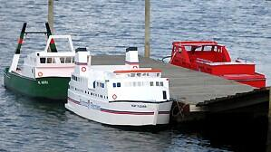

En Soustons, puedes pilotar con tu familia o amigos nuestras réplicas de barcos eléctricos (arrastrero, barco de bomberos, policía marítima,
Brittany Ferries, fragata militar, etc.) La forma de pasar un rato agradable , mientras disfrutas de la naturaleza
del lago Soustons-Plage y de la isla de Vieux-Boucau . Natación supervisada, zona de picnic, paseos a pie o en bicicleta alrededor del lago.
Actividades para adultos y niños (a partir de 11 años).